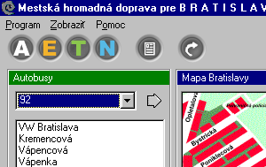
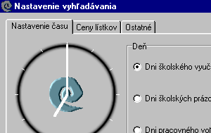
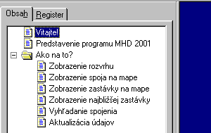

| Program MHD 2001 vznikol ako projekt, ktorı by mal
u¾ahèi� cestovanie v Bratislave. Hlavnım cie¾om bolo poskytnú�
u�ívate¾ovi pohodlné vyh¾adávanie trasy pod¾a zadanıch parametrov
ako aj jednoduché prezeranie jednotlivıch spojov, ich rozvrhov pre
ka�dú zastávku a prezeranie trás na mape Bratislavy. Dôle�itou
mo�nos�ou je aktualizácia databázy prostredníctvom internetu.
|
 |
|  |
Pri vyh¾adávaní trasy si program vy�iada zadanie zaèiatoènej
a koncovej zastávky, èas odchodu, deò (pracovnı, prázdniny, ...) a iné.
Program sa pokúsi nájs� najrıchlejšie spojenie a ak je takıch viac,
vyberie z nich to s najmenším poètom prestupov. Vısledok vyh¾adávania
sa dá zobrazi� ako trasa na mape alebo sa dá vypísa� v textovej
podrobne popisnej podobe. Program vypíše aj cenu nájdeného spojenia a
jeho då�ku trvania v minútach.
|
| Ak by ste aj napriek ve¾mi jednoduchému ovládaniu nevedli
ako nieèo spravi�, je k programu dodávaná aj pomoc. Ak ešte stále budete
ma� nejaké problémy, tak rıchlo napíšte mail na adresu :
mhd2001@host.sk |
 |